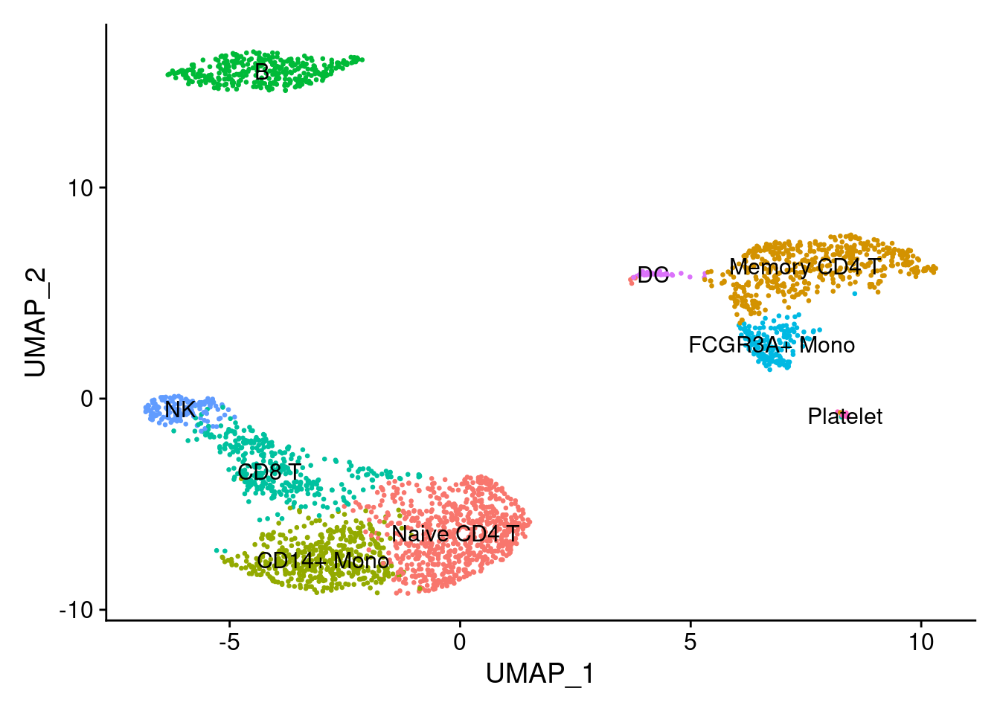
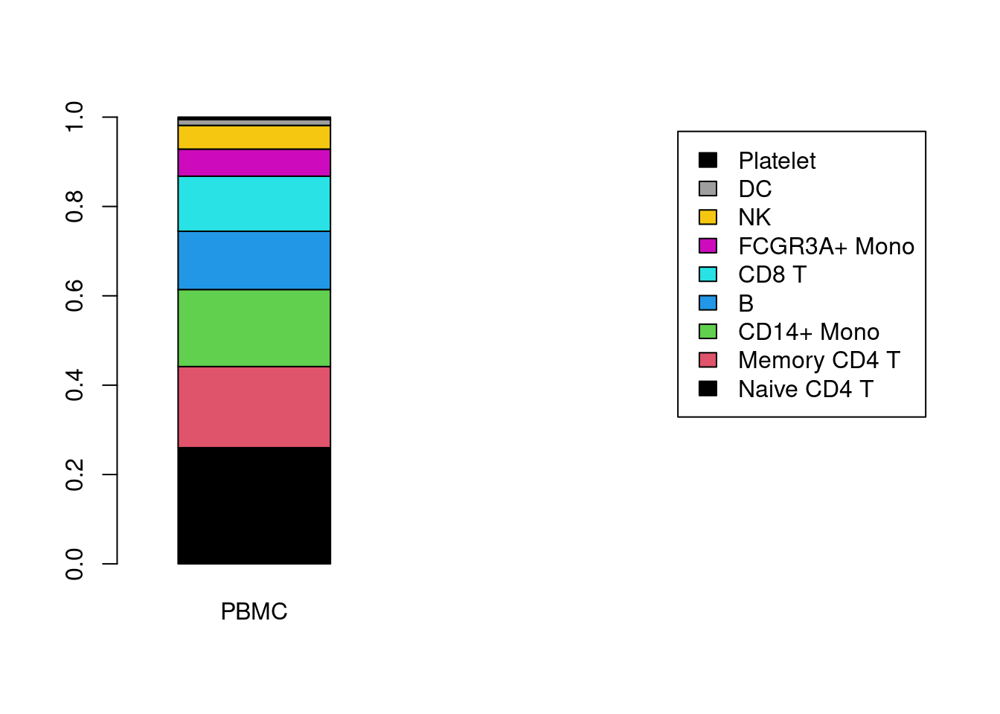
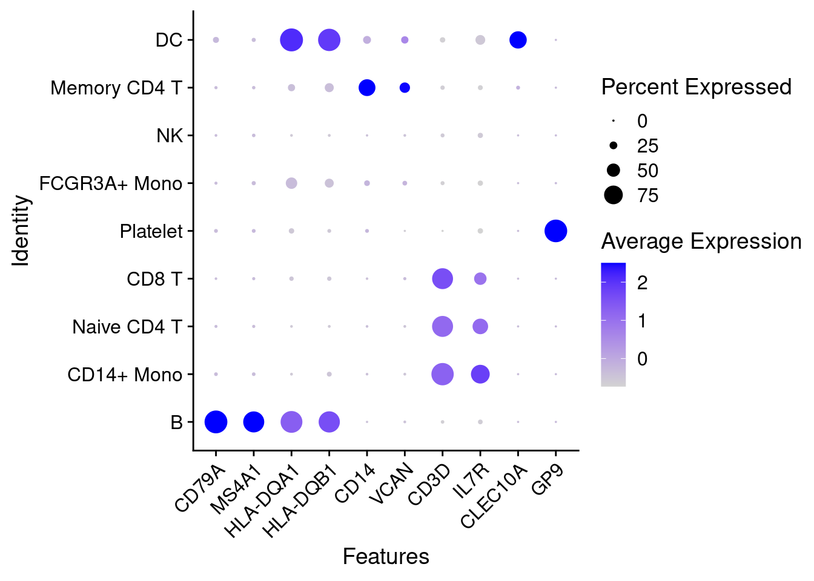

Chapter 5 use canonical markers to easily match the unbiased clustering to known cell types:

cell_biomarker
cluster_cell <- c("Naive CD4 T", "Memory CD4 T", "CD14+ Mono", "B", "CD8 T", "FCGR3A+ Mono", "NK", "DC", "Platelet")
names(cluster_cell) <- levels(PRO)
cluster_cell## 0 1 2 3 4
## "Naive CD4 T" "Memory CD4 T" "CD14+ Mono" "B" "CD8 T"
## 5 6 7 8
## "FCGR3A+ Mono" "NK" "DC" "Platelet"PRO <- RenameIdents(PRO, cluster_cell)
DimPlot(PRO, reduction = "umap", label = TRUE, pt.size = 0.5) + NoLegend()
5.0.1 细胞类型比例可视化
# PRO@active.ident
num_tab <- table( Idents(PRO), PRO$orig.ident )
num_tab##
## PBMC
## Naive CD4 T 686
## Memory CD4 T 479
## CD14+ Mono 455
## B 344
## CD8 T 325
## FCGR3A+ Mono 160
## NK 140
## DC 35
## Platelet 14freq_tab <- prop.table(x= num_tab , margin=2)
freq_tab##
## PBMC
## Naive CD4 T 0.260045489
## Memory CD4 T 0.181576952
## CD14+ Mono 0.172479151
## B 0.130401820
## CD8 T 0.123199393
## FCGR3A+ Mono 0.060652009
## NK 0.053070508
## DC 0.013267627
## Platelet 0.005307051barplot(height=freq_tab, width=1, xlim=c(0,5), col=c(1:10), legend= rownames(freq_tab), xlab="")
# 保存分析结果为rds文件
# saveRDS(PRO, file='PBMC_3K.rds')
# pro <- readRDS('PBMC_3K.rds')5.0.2 细胞类型marker基因展示
feature1 <- c('CD79A','MS4A1','HLA-DQA1','HLA-DQB1','CD14','VCAN','CD3D','IL7R','CLEC10A','GP9')
# 堆叠小提琴图
VlnPlot(PRO, features= feature1, stack = TRUE, flip = T, fill.by='ident')
# 气泡图
DotPlot(object = PRO, features=feature1, cluster.idents=T) + theme(axis.text.x = element_text(angle = 45,hjust=1))
# 分类型气泡图
feature2 <- list(Bcell = c("CD19","CD79A","CD79B","MS4A1"),
Mono = c("CD14","VCAN","FCN1"),
Tcell = c("CD3D","CD3E","CD3G","IL7R","TRAC","TRGC2","TRDC", "CD8A", "CD8B", "CD4"),
DC = c("HLA-DQA1", "HLA-DQB1", "HLA-DRB3","CLEC10A","CLEC9A"),
platelet = c("GP9","PF4") )
DotPlot(object = PRO, features=feature2, cluster.idents=T) + theme(axis.text.x = element_text(angle = 45,hjust=1) )## Warning in FetchData(object = object, vars = features, cells = cells): The
## following requested variables were not found: TRAC, TRGC2, TRDC, HLA-DRB3
5.1 sessionInfo
sessionInfo()## R version 4.0.4 (2021-02-15)
## Platform: x86_64-pc-linux-gnu (64-bit)
## Running under: Ubuntu 20.10
##
## Matrix products: default
## BLAS: /usr/lib/x86_64-linux-gnu/blas/libblas.so.3.9.0
## LAPACK: /usr/lib/x86_64-linux-gnu/lapack/liblapack.so.3.9.0
##
## locale:
## [1] LC_CTYPE=en_US.UTF-8 LC_NUMERIC=C
## [3] LC_TIME=en_GB.UTF-8 LC_COLLATE=en_US.UTF-8
## [5] LC_MONETARY=en_GB.UTF-8 LC_MESSAGES=en_US.UTF-8
## [7] LC_PAPER=en_GB.UTF-8 LC_NAME=C
## [9] LC_ADDRESS=C LC_TELEPHONE=C
## [11] LC_MEASUREMENT=en_GB.UTF-8 LC_IDENTIFICATION=C
##
## attached base packages:
## [1] stats graphics grDevices utils datasets methods base
##
## other attached packages:
## [1] forcats_0.5.1 stringr_1.4.0 dplyr_1.0.5
## [4] purrr_0.3.4 readr_1.4.0 tidyr_1.1.3
## [7] tibble_3.1.0 ggplot2_3.3.3 tidyverse_1.3.0
## [10] pbmc3k.SeuratData_3.1.4 SeuratData_0.2.1 SeuratObject_4.0.0
## [13] Seurat_4.0.1
##
## loaded via a namespace (and not attached):
## [1] readxl_1.3.1 backports_1.2.1 plyr_1.8.6
## [4] igraph_1.2.6 lazyeval_0.2.2 splines_4.0.4
## [7] listenv_0.8.0 scattermore_0.7 digest_0.6.27
## [10] htmltools_0.5.1.1 fansi_0.4.2 magrittr_2.0.1
## [13] tensor_1.5 cluster_2.1.1 ROCR_1.0-11
## [16] limma_3.46.0 globals_0.14.0 modelr_0.1.8
## [19] matrixStats_0.58.0 spatstat.sparse_2.0-0 colorspace_2.0-0
## [22] rvest_1.0.0 rappdirs_0.3.3 ggrepel_0.9.1
## [25] haven_2.3.1 xfun_0.22 crayon_1.4.1
## [28] jsonlite_1.7.2 spatstat.data_2.0-0 survival_3.2-10
## [31] zoo_1.8-9 glue_1.4.2 polyclip_1.10-0
## [34] gtable_0.3.0 leiden_0.3.7 future.apply_1.7.0
## [37] abind_1.4-5 scales_1.1.1 DBI_1.1.1
## [40] miniUI_0.1.1.1 Rcpp_1.0.6 viridisLite_0.3.0
## [43] xtable_1.8-4 reticulate_1.18 spatstat.core_1.65-5
## [46] bit_4.0.4 htmlwidgets_1.5.3 httr_1.4.2
## [49] RColorBrewer_1.1-2 ellipsis_0.3.1 ica_1.0-2
## [52] pkgconfig_2.0.3 farver_2.1.0 sass_0.3.1
## [55] uwot_0.1.10 dbplyr_2.1.0 deldir_0.2-10
## [58] utf8_1.2.1 tidyselect_1.1.0 labeling_0.4.2
## [61] rlang_0.4.10 reshape2_1.4.4 later_1.1.0.1
## [64] munsell_0.5.0 cellranger_1.1.0 tools_4.0.4
## [67] cli_2.3.1 generics_0.1.0 broom_0.7.5
## [70] ggridges_0.5.3 evaluate_0.14 fastmap_1.1.0
## [73] yaml_2.2.1 goftest_1.2-2 bit64_4.0.5
## [76] knitr_1.31 fs_1.5.0 fitdistrplus_1.1-3
## [79] RANN_2.6.1 pbapply_1.4-3 future_1.21.0
## [82] nlme_3.1-152 mime_0.10 xml2_1.3.2
## [85] hdf5r_1.3.3 compiler_4.0.4 rstudioapi_0.13
## [88] plotly_4.9.3 png_0.1-7 spatstat.utils_2.1-0
## [91] reprex_1.0.0 bslib_0.2.4 stringi_1.5.3
## [94] highr_0.8 RSpectra_0.16-0 lattice_0.20-41
## [97] Matrix_1.3-2 vctrs_0.3.6 pillar_1.5.1
## [100] lifecycle_1.0.0 spatstat.geom_1.65-5 lmtest_0.9-38
## [103] jquerylib_0.1.3 RcppAnnoy_0.0.18 data.table_1.14.0
## [106] cowplot_1.1.1 irlba_2.3.3 httpuv_1.5.5
## [109] patchwork_1.1.1 R6_2.5.0 bookdown_0.21
## [112] promises_1.2.0.1 KernSmooth_2.23-17 gridExtra_2.3
## [115] parallelly_1.24.0 codetools_0.2-17 MASS_7.3-53.1
## [118] assertthat_0.2.1 withr_2.4.1 sctransform_0.3.2
## [121] mgcv_1.8-33 parallel_4.0.4 hms_1.0.0
## [124] grid_4.0.4 rpart_4.1-15 rmarkdown_2.7
## [127] Rtsne_0.15 shiny_1.6.0 lubridate_1.7.10